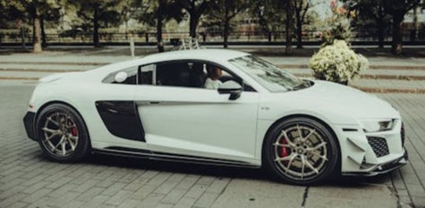

The Audi skysphere concept* is the first of four concept cars that redefine progressive luxury. The vision is to offer occupants a fascinating high-end experience that goes far beyond the practical reasons for being in a car. The interior becomes an interactive space, making the vehicle what Audi likes to call an “experience device”. All this is made possible by automated driving*, a revolutionary interior redesign and a 360-degree digital ecosystem.
Variable wheelbase for dual driving experiences
The Audi skysphere concept* was designed to combine two different driving experiences in one vehicle: a grand touring experience and a sports experience. This is made possible thanks to a spectacular technical feature: the variable wheelbase. Electric motors and a sophisticated mechanism with interlocking body and frame components allow both the wheelbase and the exterior length to be varied by 250 millimeters. At the same time, ground clearance can be varied by 10 millimeters.
The 4.94-meter “Sports” mode configuration delivers an agile electric roadster for drivers to steer themselves. Here, the focus is on the vehicle dynamics. Like the steering wheel and pedals, all the controls on the dashboard and monitor panel in the center console are ideally positioned for each driver in the ergonomically perfect cockpit. If occupants prefer the comfortable, automated “Grand Touring” mode, the Audi skysphere concept* extends to a length of 5.19 meters and the steering wheel and pedals disappear from view. Then occupants enjoy not only a sense of space that explores new dimensions in a sporty cabriolet but also services delivered by a seamlessly integrated digital ecosystem.